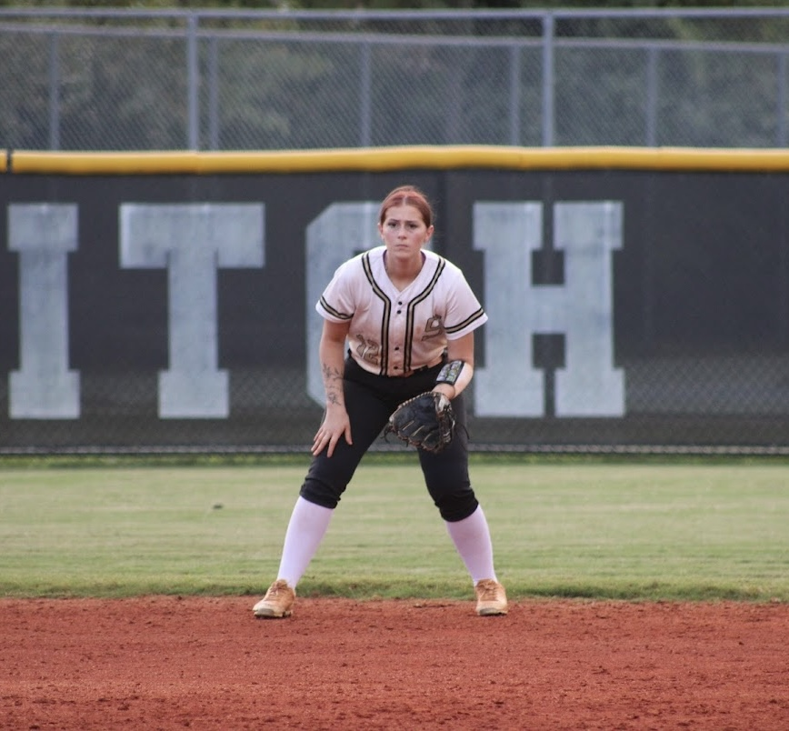

Open Roster Spot
Competitive team looking for a utility player for the upcoming season.
Create a profile that helps coaches understand the player—not just a name on a list.
Profiles include the practical details coaches need: age division, positions, location, availability, travel preferences, experience, and family-approved contact through private messaging.

Competitive team looking for a utility player for the upcoming season.
Established program seeking an additional pitcher for a balanced rotation.
Outfielder needed for an upcoming showcase weekend.